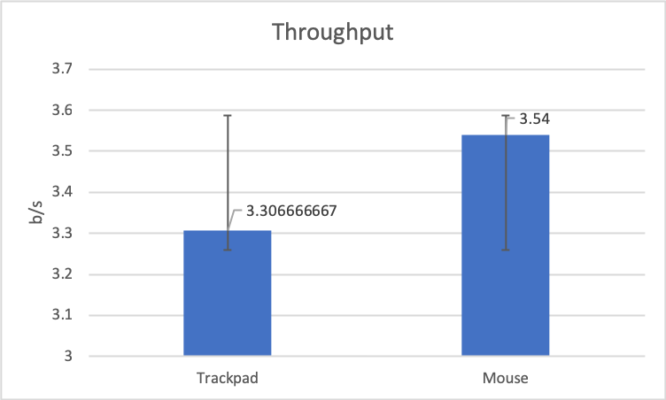

The conditions I tested were the usability of a MacBook Pro trackpad vs an Apple mouse. My hypothesis (based on experience) was the people would generally do better using the trackpad vs using the mouse.
Testing 15 trials with amplitudes [100, 200, 400], width [20, 40, 80] in an ordered fashion with increasing difficulty. The subject has to try their best to select the colored box accurately as fast as possible. They will try using the trackpad first, then the Apple mouse.
What I found was that while I did better using the trackpad, other people did better using the mouse. As shown in the chart, the mouse has a higher throughput.
